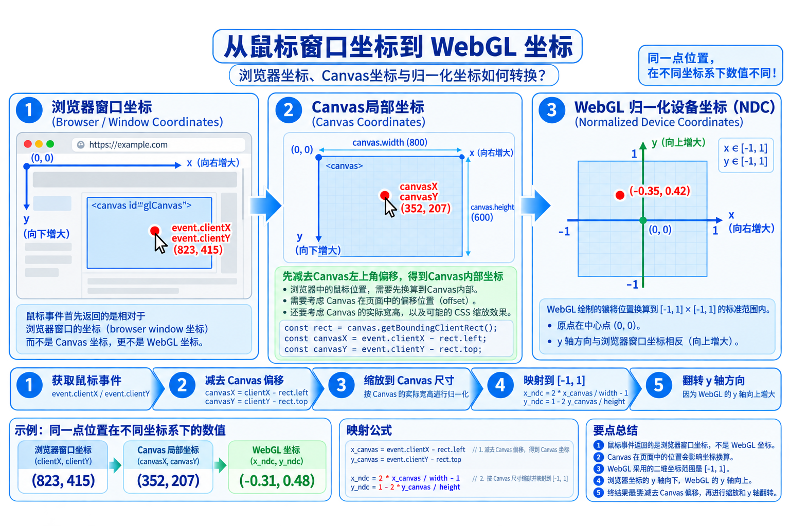

核心问题：用户在屏幕上的操作，怎样转换成对图形对象的操作？
鼠标给浏览器的是窗口位置，WebGL需要的是图形空间中的数据；如果还要选中对象，就必须建立屏幕位置与对象之间的关系。
如果点击Canvas左上角，WebGL中的坐标是左上角吗？为什么？
鼠标、键盘、触摸屏、手写板、游戏杆、空间球。
关注设备本身如何产生信号。
定位、拾取、选择、键盘输入、轨迹输入。
关注应用程序获得了什么语义信息。
程序等待指定输入。
scanf("%d", &x);适合程序引导用户输入。
用户随时触发事件，程序通过回调响应。
canvas.addEventListener("click", callback);适合交互式图形程序。
飞行模拟、绘图软件、游戏控制更适合哪一种输入模式？为什么？
事件不仅告诉我们“发生了点击”，还携带位置、按键、目标元素等测量数据。
clickmousedownkeydown
canvasbuttonwindow
clientXclientYkey
canvas.addEventListener("mousedown", function(event) {
console.log(event.clientX, event.clientY);
});浏览器窗口坐标以左上角为原点（Y轴向下）；WebGL 裁剪空间 (NDC) 以中心为原点，范围映射在 [-1, 1] 且 Y轴向上。

设 Canvas 宽度为 w，高度为 h，鼠标在 Canvas
内的像素坐标为 (xw, yw)：
核心要点：Y 轴方向反转（h - yw）是完成屏幕像素到 GPU 渲染坐标转换的关键。
如果 Canvas 不在页面左上角，想把鼠标点击位置正确转换为 WebGL 坐标，最稳妥的做法是：
event.clientX / canvas.width
getBoundingClientRect() 得到 Canvas 位置，再换算到
NDC
event.screenX，因为它就是
Canvas 内坐标
clientX/clientY 是浏览器窗口坐标；应先扣除 Canvas
在页面中的位置，再映射到 WebGL 的归一化坐标。
如果Canvas不在页面左上角，直接用
event.clientX / canvas.width 会产生偏移。
function pointerToNDC(event, canvas) {
const rect = canvas.getBoundingClientRect();
const xCanvas = (event.clientX - rect.left) * canvas.width / rect.width;
const yCanvas = (event.clientY - rect.top) * canvas.height / rect.height;
const x = 2 * xCanvas / canvas.width - 1;
const y = 1 - 2 * yCanvas / canvas.height;
return [x, y];
}
如果页面左侧有一个200px宽的导航栏，直接使用
clientX 会让绘制点向哪边偏？
实时监控三层坐标变化：浏览器窗口坐标 (clientX, clientY) → Canvas
元素内像素坐标 (xw, yw) → WebGL
归一化设备坐标 (xndc, yndc)。
getBoundingClientRect() 的稳健公式。
1 - 2y/h 的取反翻转。
坐标转换之后，得到的是WebGL可用的位置数据。接下来把它写入Buffer，并在下一次绘制中显示出来。
let index = 0;
canvas.addEventListener("click", function(event) {
const [x, y] = pointerToNDC(event, canvas);
const point = new Float32Array([x, y]);
gl.bindBuffer(gl.ARRAY_BUFFER, vBuffer);
gl.bufferSubData(gl.ARRAY_BUFFER, 2 * 4 * index, point);
index++;
});
function render() {
gl.clear(gl.COLOR_BUFFER_BIT);
gl.drawArrays(gl.POINTS, 0, index);
requestAnimationFrame(render);
}一次点击只能提供一个位置。绘制矩形需要两次点击，因此程序必须记住第一次点击的位置。
保存P1，不立即形成矩形。
firstPoint = [x, y];
waitingSecond = true;得到P2，计算另外两个顶点，上传4个顶点。
makeRectangle(firstPoint, [x, y]);
waitingSecond = false;通过鼠标在 Canvas 上两次连续点击构建矩形：第一次点击确定矩形角点 P1(x1, y1)，第二次点击确定对角点 P2(x2, y2)，程序自动计算补齐其余两点并上传 GPU 渲染。
如果要在程序中支持“撤销上一个矩形（Undo）”或“删除指定矩形”，程序需要额外保存什么信息？
位置输入只能告诉程序用户点击了哪个屏幕位置；拾取要回答的是这个位置对应哪个图形对象。
前向渲染从对象绘制到像素；反向拾取要从鼠标点击的屏幕像素锁定对应图形对象。
核心思想：先用简单的包围矩形/轴对齐包围盒 (AABB)
做碰撞判定。
特点：计算速度快、易于实现，适合二维与粗粒度筛选。
核心思想：在后台帧缓冲给每个对象绘制唯一编码颜色，用
gl.readPixels 读取像素值识别对象。
特点：硬件加速、像素级精确，适合复杂几何。
核心思想：从视点经过鼠标点击点穿过屏幕生成一条三维射线，计算射线与场景网格的求交。
特点：数学完备，适合三维空间精确选择。
1. 二维画图软件选中图形时，优先考虑哪种方法？（包围盒法）
2. 三维场景中选中离相机最近的模型，又更像哪种方法？（射线拾取法）
如果希望用户点击屏幕后，程序知道“点中了哪个对象”，下列哪种方法最符合颜色ID拾取的思想？
event.clientX 和
event.clientY
gl.readPixels 读取点击处颜色
gl.viewport，让鼠标附近区域变大
窗口大小变化时，程序需要重新考虑Canvas大小、视口和宽高比。
gl.viewport触摸事件可提供多个触点，进一步组合成轻扫、捏合、旋转等手势。
touchstart / touchmove现象：鼠标点击Canvas中心附近，但点总是向右下偏移。
canvas.addEventListener("click", function(event) {
const x = -1 + 2 * event.clientX / canvas.width;
const y = -1 + 2 * (canvas.height - event.clientY) / canvas.height;
addPoint(x, y);
});这段代码默认了什么前提？
要求AI只指出最可能的3个错误位置。
打印 getBoundingClientRect() 与NDC结果。
为什么程序不能仅凭
event.clientX
直接知道“点中了哪个对象”？请用一句话回答。
第三章把前两章的静态绘制程序扩展为真正的交互式图形应用。
理解图形流水线如何从场景生成图像。
学习用数据和Shader驱动GPU绘制。
让程序随时间和用户输入持续改变状态。